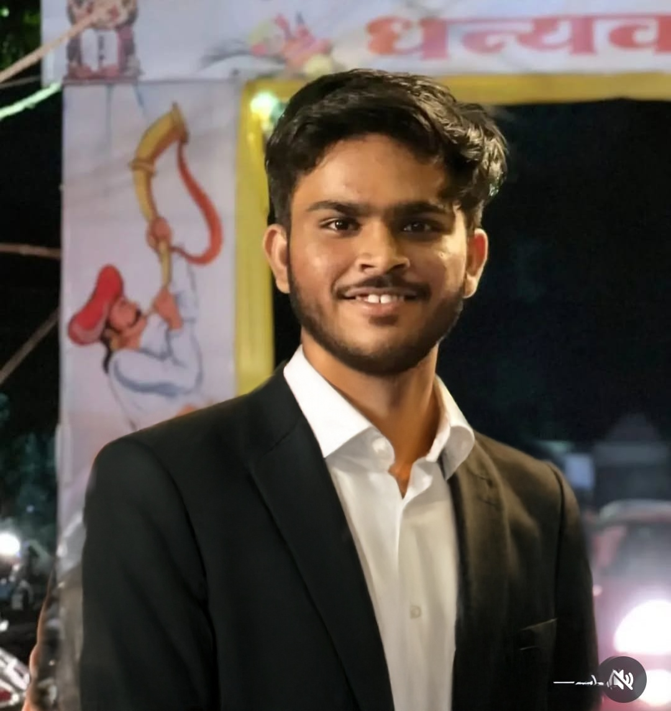

About Me
My name is Yash Tambat, and I’m a recent graduate in Electronics and
Telecommunication
Engineering (BE), driven by a strong interest in the IT industry, particularly in Frontend Development and
Data
Analysis. My academic journey began with a Diploma in ENTC Engineering, which I completed in 2022, and later
progressed to earning my Bachelor’s degree, where I successfully graduated with a commendable 8.0 CGPA.
Over time, I have developed a versatile skill set that spans multiple areas of technology. On the development
side, I am proficient in HTML, CSS, and JavaScript. I’m also
well-versed in C, C++,
and Python. In the data domain, I have hands-on experience with Excel, Power BI, and
SQL
databases,and libraries like NumPy, Pandas, Matplotlib, and Seaborn , enabling me to work
on data-driven projects, perform deep data analysis, and visualize insights effectively.
In addition to my technical expertise, I consider my communication, teamwork, and leadership skills to be some
of my strongest assets. I speak Marathi, Hindi, and English, which helps me connect with diverse people and
work in multicultural environments.
